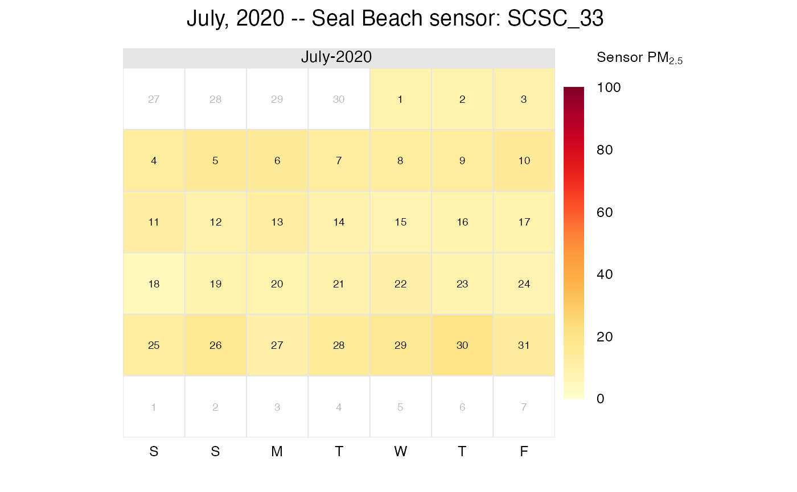
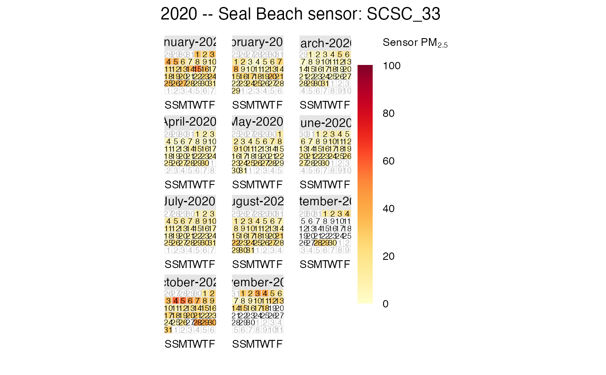
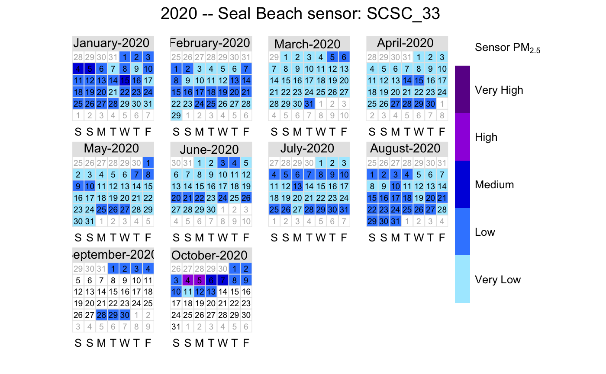
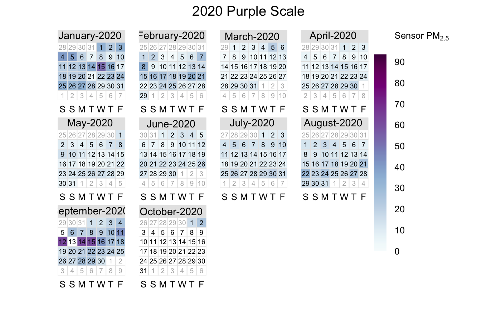
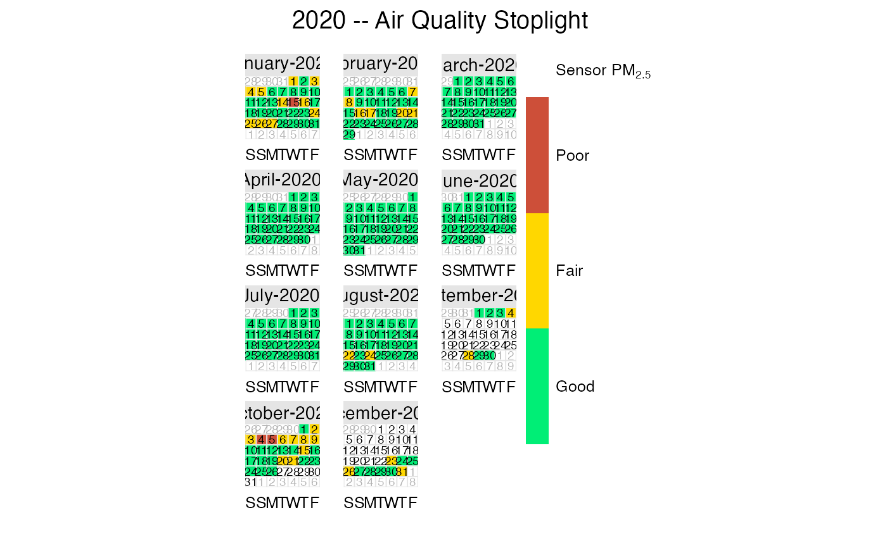

R/sensor_calendarPlot.R
sensor_calendarPlot.RdFunction for plotting PM2.5 concentration in a calendar format.
This function wraps the openair calendarPlot() function.
sensor_calendarPlot( sensor = NULL, colors = NULL, breaks = NULL, labels = NULL, limits = c(0, 100), title = NULL, data.thresh = 50 )
| sensor | An 'airsensor' object |
|---|---|
| colors | Colours to be used for plotting. Options include "aqi", "scaqmd", “default”,
“increment”, “heat”, “jet” and RColorBrewer colours — see the openair
|
| breaks | If a categorical scale is required then these breaks will be
used. For example, |
| labels | If a categorical scale is required then these labels will be
used. Note there is one less label than break. For example,
|
| limits | Use this option to manually set the colour scale limits. This
is useful in the case when there is a need for two or more plots and a
consistent scale is needed on each. Set the limits to cover the maximimum
range of the data for all plots of interest. For example, if one plot had
data covering 0–60 and another 0–100, then set |
| title | Optional title. If |
| data.thresh | Data capture threshold passed to |
A plot and an object of class "openair".
Data are trimmed to the local-time year or month boundaries as appropriate.
Two special options are provided to specify a set of colors,
breaks and labels.
Using colors = "aqi" will use US EPA Air Quality Index colors and breaks
defined by breaks <- c(-Inf, 12, 35.5, 55.5, 150.5, 250.5, Inf).
Using colors = "scaqmd" will use a custom set of colors and breaks
defined by breaks <- c(-Inf, 12, 35, 55, 75, Inf).
Daily averages are calculated using LST (Local Standard Time) day boundaries as specified by the US EPA. LST assumes that standard time applies all year round and guarantees that every day has 24 hours -- no "spring forward" or "fall back". Because of this, LST daily averages calculated during months where daylight savings time is in effect will differ very slightly from daily averages calculated using local "clock time".
# \donttest{ library(AirSensor) setArchiveBaseUrl("http://data.mazamascience.com/PurpleAir/v1") # Monthly plot sensor <- sensor_loadMonth("scaqmd", 202007) %>% sensor_filterMeta(label == "SCSC_33") sensor_calendarPlot(sensor)# Annual plot sensor <- sensor_loadYear("scaqmd", 2020) %>% sensor_filterMeta(label == "SCSC_33") sensor_calendarPlot(sensor)# SCAQMD colors sensor_calendarPlot(sensor, "scaqmd")# Custom continuous color palette from RColorBrewer sensor_calendarPlot( sensor, colors = "BuPu", title = "2020 Purple Scale", limits = range(sensor$data[,-1], na.rm = TRUE) # don't use data$datetime )# Custom categorical colors sensor_calendarPlot( sensor, colors = c("springgreen2", "gold", "tomato3"), breaks = c(-Inf, 25, 50, Inf), labels = c("Good", "Fair", "Poor"), title = "2020 -- Air Quality Stoplight" )# }